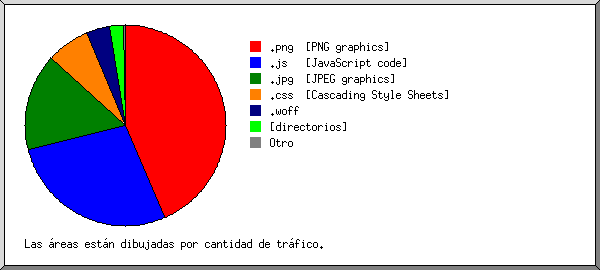

Estadísticas del servidor Web de motoenvia.com
Estadísticas del servidor Web de motoenvia.com
Programa iniciado a las Dom/31/May/2020 7:16 am.
Análisis de peticiones del Jue/07/May/2020 2:10 pm al Dom/31/May/2020 6:53 am (23.70 días).
Estadísticas del servidor Web de motoenvia.comPrograma iniciado a las Dom/31/May/2020 7:16 am.
Análisis de peticiones del Jue/07/May/2020 2:10 pm al Dom/31/May/2020 6:53 am (23.70 días).
(Ir a: Arriba | Resumen general | Informe mensual | Resumen diario | Resumen horario | Informe de dominios | Informe de organización | Informe de remitentes redirecionados | Informe de errores de remitentes | Informe de sitios remitentes | Informe de navegadores | Resumen de navegadores | Informe de Sistemas Operativos | Informe de códigos de estado | Informe de tamaño de archivos | Informe de Tipos de Archivo | Informe de Directorios | Informe de peticiones)
Los números entre paréntesis se refieren a 7 días al 31/May/2020 7:16 am.
Peticiones exitosas: 8,300 (940)
Promedio de peticiones exitosas por día: 350 (134)
Peticiones exitosas por página: 662 (138)
Promedio de peticiones exitosas por página por día: 27 (19)
Peticiones no logradas: 381 (3)
Peticiones redireccionadas: 95 (5)
Archivos diferentes solicitados: 50 (109)
Sistemas diferentes atendidos: 282 (322)
Transferencia total: 224.72 megabytes (19.47 megabytes)
Promedio de transferencia por día: 9.48 megabytes (2.78 megabytes)
(Ir a: Arriba | Resumen general | Informe mensual | Resumen diario | Resumen horario | Informe de dominios | Informe de organización | Informe de remitentes redirecionados | Informe de errores de remitentes | Informe de sitios remitentes | Informe de navegadores | Resumen de navegadores | Informe de Sistemas Operativos | Informe de códigos de estado | Informe de tamaño de archivos | Informe de Tipos de Archivo | Informe de Directorios | Informe de peticiones)
Cada unidad ( ) representa 20 peticiones por páginas o fracción.
) representa 20 peticiones por páginas o fracción.
| mes | No. pet. | Págs. | |
|---|---|---|---|
| May 2020 | 8300 | 662 |   |
Mes de mayor tráfico: May 2020 (662 peticiones por páginas).
(Ir a: Arriba | Resumen general | Informe mensual | Resumen diario | Resumen horario | Informe de dominios | Informe de organización | Informe de remitentes redirecionados | Informe de errores de remitentes | Informe de sitios remitentes | Informe de navegadores | Resumen de navegadores | Informe de Sistemas Operativos | Informe de códigos de estado | Informe de tamaño de archivos | Informe de Tipos de Archivo | Informe de Directorios | Informe de peticiones)
Cada unidad () representa 6 peticiones por páginas o fracción.
| día | No. pet. | Págs. | |
|---|---|---|---|
| Dom | 363 | 48 |  |
| Lun | 857 | 78 |  |
| Mar | 834 | 62 | |
| Mié | 875 | 62 | |
| Jue | 2970 | 218 | |
| Vie | 1189 | 106 |  |
| Sáb | 1212 | 88 | |
(Ir a: Arriba | Resumen general | Informe mensual | Resumen diario | Resumen horario | Informe de dominios | Informe de organización | Informe de remitentes redirecionados | Informe de errores de remitentes | Informe de sitios remitentes | Informe de navegadores | Resumen de navegadores | Informe de Sistemas Operativos | Informe de códigos de estado | Informe de tamaño de archivos | Informe de Tipos de Archivo | Informe de Directorios | Informe de peticiones)
Cada unidad () representa 2 peticiones por páginas o fracción.
| hr | No. pet. | Págs. | |
|---|---|---|---|
| 0 | 317 | 16 | |
| 1 | 174 | 10 | |
| 2 | 41 | 11 | |
| 3 | 155 | 22 | |
| 4 | 127 | 13 | |
| 5 | 294 | 31 | |
| 6 | 97 | 9 | |
| 7 | 114 | 7 | |
| 8 | 118 | 8 | |
| 9 | 809 | 47 | |
| 10 | 589 | 27 | |
| 11 | 872 | 43 | |
| 12 | 381 | 29 | |
| 13 | 347 | 26 | |
| 14 | 457 | 83 | |
| 15 | 367 | 30 | |
| 16 | 292 | 32 | |
| 17 | 589 | 61 | |
| 18 | 498 | 43 | |
| 19 | 324 | 22 | |
| 20 | 573 | 27 | |
| 21 | 239 | 19 | |
| 22 | 187 | 15 | |
| 23 | 339 | 31 | |
(Ir a: Arriba | Resumen general | Informe mensual | Resumen diario | Resumen horario | Informe de dominios | Informe de organización | Informe de remitentes redirecionados | Informe de errores de remitentes | Informe de sitios remitentes | Informe de navegadores | Resumen de navegadores | Informe de Sistemas Operativos | Informe de códigos de estado | Informe de tamaño de archivos | Informe de Tipos de Archivo | Informe de Directorios | Informe de peticiones)
Listado de los dominios, ordenados por cantidad de tráfico.
| No. pet. | %bytes | dominio |
|---|---|---|
| 8300 | 100% | [direcciones numéricas sin resolver] |
(Ir a: Arriba | Resumen general | Informe mensual | Resumen diario | Resumen horario | Informe de dominios | Informe de organización | Informe de remitentes redirecionados | Informe de errores de remitentes | Informe de sitios remitentes | Informe de navegadores | Resumen de navegadores | Informe de Sistemas Operativos | Informe de códigos de estado | Informe de tamaño de archivos | Informe de Tipos de Archivo | Informe de Directorios | Informe de peticiones)

Listado de las 20 primeras organizaciones por número de peticiones, ordenadas por número de peticiones.
| No. pet. | %bytes | organización |
|---|---|---|
| 1660 | 26.41% | 181.47 |
| 1562 | 16.60% | 187.150 |
| 785 | 9.18% | 187.252 |
| 598 | 6.71% | 70 |
| 568 | 4.65% | 188.43 |
| 359 | 3.52% | 152.168 |
| 349 | 4.57% | 187.223 |
| 259 | 3.04% | 189.174 |
| 213 | 1.77% | 187.189 |
| 180 | 0.87% | 189.203 |
| 173 | 0.65% | 201.175 |
| 157 | 0.60% | 66.249 |
| 140 | 2.21% | 194.48 |
| 120 | 2.86% | 200.68 |
| 93 | 1.21% | 187.157 |
| 88 | 1.88% | 189.176 |
| 74 | 1.52% | 69 |
| 70 | 0.91% | 65.154 |
| 60 | 0.79% | 187.177 |
| 59 | 0.75% | 177.225 |
| 733 | 9.31% | [no listadas: 75 organizaciones] |
(Ir a: Arriba | Resumen general | Informe mensual | Resumen diario | Resumen horario | Informe de dominios | Informe de organización | Informe de remitentes redirecionados | Informe de errores de remitentes | Informe de sitios remitentes | Informe de navegadores | Resumen de navegadores | Informe de Sistemas Operativos | Informe de códigos de estado | Informe de tamaño de archivos | Informe de Tipos de Archivo | Informe de Directorios | Informe de peticiones)

Listado de los URLs remitentes, ordenados por número de peticiones redireccionadas.
| No. pet. | URL |
|---|---|
| 4 | https://motoenvia.com/ |
| 2 | http://motoenvia.com.mx/ |
(Ir a: Arriba | Resumen general | Informe mensual | Resumen diario | Resumen horario | Informe de dominios | Informe de organización | Informe de remitentes redirecionados | Informe de errores de remitentes | Informe de sitios remitentes | Informe de navegadores | Resumen de navegadores | Informe de Sistemas Operativos | Informe de códigos de estado | Informe de tamaño de archivos | Informe de Tipos de Archivo | Informe de Directorios | Informe de peticiones)

Listado de los URLs de remitentes, ordenados por número de peticiones no logradas.
(Ir a: Arriba | Resumen general | Informe mensual | Resumen diario | Resumen horario | Informe de dominios | Informe de organización | Informe de remitentes redirecionados | Informe de errores de remitentes | Informe de sitios remitentes | Informe de navegadores | Resumen de navegadores | Informe de Sistemas Operativos | Informe de códigos de estado | Informe de tamaño de archivos | Informe de Tipos de Archivo | Informe de Directorios | Informe de peticiones)

Listado de los sitios remitentes, ordenados por número de peticiones.
| No. pet. | sitio |
|---|---|
| 4819 | https://motoenvia.com/ |
| 2427 | https://www.motoenvia.com/ |
| 28 | https://mail.motoenvia.com/ |
| 17 | android-app://com.google.android.googlequicksearchbox/ |
| 10 | http://motoenvia.com/ |
| 6 | http://localhost/ |
| 3 | https://www.google.com/ |
| 3 | https://l.instagram.com/ |
| 3 | https://l.facebook.com/ |
| 2 | http://motoenvia.com.mx/ |
| 2 | https://r.search.yahoo.com/ |
| 2 | https://motoenvia.com.mx/ |
| 1 | http://www.bing.com/ |
| 1 | http://m.facebook.com/ |
| 1 | http://d87ff378.ngrok.io/ |
(Ir a: Arriba | Resumen general | Informe mensual | Resumen diario | Resumen horario | Informe de dominios | Informe de organización | Informe de remitentes redirecionados | Informe de errores de remitentes | Informe de sitios remitentes | Informe de navegadores | Resumen de navegadores | Informe de Sistemas Operativos | Informe de códigos de estado | Informe de tamaño de archivos | Informe de Tipos de Archivo | Informe de Directorios | Informe de peticiones)

Listado de los 40 primeros navegadores por número de peticiones por páginas, ordenados por número de peticiones por páginas.
| No. pet. | Págs. | Navegador |
|---|---|---|
| 1680 | 140 | Mozilla/5.0 (Macintosh; Intel Mac OS X 10_15_4) AppleWebKit/605.1.15 (KHTML, like Gecko) Version/13.1 Safari/605.1.15 |
| 1377 | 59 | Mozilla/5.0 (Windows NT 10.0; Win64; x64) AppleWebKit/537.36 (KHTML, like Gecko) Chrome/81.0.4044.138 Safari/537.36 |
| 56 | 56 | Mozilla/5.0 (Windows NT 10.0; Win64; x64)AppleWebKit/537.36 (KHTML, like Gecko) Chrome/66.0.3359.181 Safari/537.36 |
| 26 | 25 | facebookexternalhit/1.1 (+http://www.facebook.com/externalhit_uatext.php) |
| 586 | 25 | Mozilla/5.0 (Windows NT 10.0; Win64; x64) AppleWebKit/537.36 (KHTML, like Gecko) Chrome/81.0.4044.129 Safari/537.36 |
| 508 | 25 | Mozilla/5.0 (Windows NT 10.0; Win64; x64; rv:77.0) Gecko/20100101 Firefox/77.0 |
| 222 | 20 | Mozilla/5.0 (Macintosh; Intel Mac OS X 10_14_6) AppleWebKit/537.36 (KHTML, like Gecko) Chrome/81.0.4044.138 Safari/537.36 |
| 18 | 18 | Mozilla/5.0 (compatible; AlphaBot/3.2; +http://alphaseobot.com/bot.html) |
| 249 | 11 | Mozilla/5.0 (iPhone; CPU iPhone OS 13_4_1 like Mac OS X) AppleWebKit/605.1.15 (KHTML, like Gecko) Version/13.1 Mobile/15E148 Safari/604.1 |
| 261 | 11 | Mozilla/5.0 (Windows NT 10.0; Win64; x64) AppleWebKit/537.36 (KHTML, like Gecko) Chrome/80.0.3987.163 Safari/537.36 |
| 16 | 11 | Go-http-client/1.1 |
| 259 | 10 | Mozilla/5.0 (Linux; Android 9; SM-G955F) AppleWebKit/537.36 (KHTML, like Gecko) Chrome/81.0.4044.138 Mobile Safari/537.36 |
| 8 | 8 | Mozilla/5.0 (Linux; Android 6.0.1; Nexus 5X Build/MMB29P) AppleWebKit/537.36 (KHTML, like Gecko) Chrome/80.0.3987.92 Mobile Safari/537.36 (compatible; Googlebot/2.1; +http://www.google.com/bot.html) |
| 123 | 8 | Mozilla/5.0 (Linux; Android 10; SM-G9650) AppleWebKit/537.36 (KHTML, like Gecko) Chrome/81.0.4044.111 Mobile Safari/537.36 |
| 124 | 7 | Mozilla/5.0 (Macintosh; Intel Mac OS X 10_15_4) AppleWebKit/537.36 (KHTML, like Gecko) Chrome/81.0.4044.138 Safari/537.36 |
| 7 | 7 | Mozilla/5.0 (Windows NT 10.0; Win64; x64; rv:57.0) Gecko/20100101 Firefox/57.0 |
| 15 | 7 | Mozilla/5.0 (compatible; MJ12bot/v1.4.8; http://mj12bot.com/) |
| 7 | 7 | Mozilla/5.0 (X11; Ubuntu; Linux x86_64; rv:58.0) Gecko/20100101 Firefox/58.0 |
| 63 | 6 | Mozilla/5.0 (Linux; Android 8.1.0; DUB-LX3) AppleWebKit/537.36 (KHTML, like Gecko) Chrome/81.0.4044.138 Mobile Safari/537.36 |
| 173 | 6 | Mozilla/5.0 (iPhone; CPU iPhone OS 13_3_1 like Mac OS X) AppleWebKit/605.1.15 (KHTML, like Gecko) Version/13.0.5 Mobile/15E148 Safari/604.1 |
| 149 | 6 | Mozilla/5.0 (Windows NT 10.0; Win64; x64) AppleWebKit/537.36 (KHTML, like Gecko) Chrome/83.0.4103.61 Safari/537.36 |
| 81 | 6 | Mozilla/5.0 (compatible; Googlebot/2.1; +http://www.google.com/bot.html) |
| 15 | 6 | Mozilla/5.0 (compatible; YandexBot/3.0; +http://yandex.com/bots) |
| 15 | 5 | Mozilla/5.0 (Windows NT 6.1) AppleWebKit/537.36 (KHTML, like Gecko) Chrome/64.0.3282.186 Safari/537.36 OPR/51.0.2830.55 (Edition Campaign 34) |
| 65 | 5 | Mozilla/5.0 (Linux; Android 10; SM-A307G) AppleWebKit/537.36 (KHTML, like Gecko) Chrome/81.0.4044.138 Mobile Safari/537.36 |
| 5 | 5 | Mozilla/5.0 (Linux; Android 6.0.1; Nexus 5X Build/MMB29P) AppleWebKit/537.36 (KHTML, like Gecko) Chrome/41.0.2272.96 Mobile Safari/537.36 (compatible; Googlebot/2.1; +http://www.google.com/bot.html) |
| 61 | 4 | Mozilla/5.0 (iPhone; CPU iPhone OS 13_3 like Mac OS X) AppleWebKit/605.1.15 (KHTML, like Gecko) Version/13.0.4 Mobile/15E148 Safari/604.1 |
| 115 | 4 | Mozilla/5.0 (Windows NT 10.0; Win64; x64) AppleWebKit/537.36 (KHTML, like Gecko) Chrome/70.0.3538.102 Safari/537.36 Edge/18.18362 |
| 33 | 4 | Mozilla/5.0 (Linux; Android 8.0.0; SM-G935F) AppleWebKit/537.36 (KHTML, like Gecko) Chrome/81.0.4044.138 Mobile Safari/537.36 |
| 278 | 4 | Mozilla/5.0 (Windows NT 10.0; WOW64) AppleWebKit/537.36 (KHTML, like Gecko) Chrome/55.0.2883.87 UBrowser/7.0.185.1002 Safari/537.36 |
| 32 | 3 | Mozilla/5.0 (Windows NT 10.0; Win64; x64) AppleWebKit/537.36 (KHTML, like Gecko) Chrome/81.0.4044.122 Safari/537.36 |
| 3 | 3 | Mozilla/5.0 (X11; Ubuntu; Linux i686; rv:28.0) Gecko/20100101 Firefox/28.0 |
| 3 | 3 | Mozilla/5.0 zgrab/0.x (compatible; Researchscan/t12sns; +http://researchscan.comsys.rwth-aachen.de) |
| 95 | 3 | Mozilla/5.0 (Windows NT 10.0; Win64; x64) AppleWebKit/537.36 (KHTML, like Gecko) Chrome/70.0.3538.102 Safari/537.36 Edge/18.18363 |
| 83 | 3 | Mozilla/5.0 (Linux; Android 9; ANE-LX3) AppleWebKit/537.36 (KHTML, like Gecko) Chrome/81.0.4044.138 Mobile Safari/537.36 |
| 33 | 3 | Mozilla/5.0 (Linux; Android 9; SM-N950F) AppleWebKit/537.36 (KHTML, like Gecko) Chrome/83.0.4103.60 Mobile Safari/537.36 |
| 30 | 3 | Mozilla/5.0 (Linux; Android 8.0.0; SM-G935F Build/R16NW; wv) AppleWebKit/537.36 (KHTML, like Gecko) Version/4.0 Chrome/81.0.4044.138 Mobile Safari/537.36 [FB_IAB/FB4A;FBAV/268.1.0.54.121;] |
| 3 | 3 | Mozilla/5.0 (compatible; Panscient/1.0; +http://panscient.com/faq.htm) |
| 3 | 3 | WhatsApp/2.20.123 A |
| 61 | 3 | Mozilla/5.0 (Linux; Android 10; SAMSUNG SM-G975U) AppleWebKit/537.36 (KHTML, like Gecko) SamsungBrowser/11.2 Chrome/75.0.3770.143 Mobile Safari/537.36 |
| 1354 | 112 | [no listados: 98 Navegadores] |
(Ir a: Arriba | Resumen general | Informe mensual | Resumen diario | Resumen horario | Informe de dominios | Informe de organización | Informe de remitentes redirecionados | Informe de errores de remitentes | Informe de sitios remitentes | Informe de navegadores | Resumen de navegadores | Informe de Sistemas Operativos | Informe de códigos de estado | Informe de tamaño de archivos | Informe de Tipos de Archivo | Informe de Directorios | Informe de peticiones)

Listado de los navegadores que representan, por lo menos, 1 petición de una página, ordenados por número de peticiones por páginas.
| no. | No. pet. | Págs. | Navegador |
|---|---|---|---|
| 1 | 7417 | 501 | Safari |
| 5220 | 335 | Safari/537 | |
| 1680 | 140 | Safari/605 | |
| 485 | 23 | Safari/604 | |
| 1 | 1 | Safari/602 | |
| 30 | 1 | Safari/603 | |
| 1 | 1 | Safari/533 | |
| 2 | 591 | 50 | Firefox |
| 508 | 25 | Firefox/77 | |
| 8 | 8 | Firefox/58 | |
| 7 | 7 | Firefox/57 | |
| 3 | 3 | Firefox/28 | |
| 60 | 3 | Firefox/76 | |
| 2 | 2 | Firefox/45 | |
| 1 | 1 | Firefox/52 | |
| 1 | 1 | Firefox/73 | |
| 3 | 161 | 49 | Netscape (compatible) |
| 4 | 26 | 25 | facebookexternalhit |
| 26 | 25 | facebookexternalhit/1 | |
| 5 | 16 | 11 | Go-http-client |
| 16 | 11 | Go-http-client/1 | |
| 6 | 11 | 9 | |
| 11 | 9 | WhatsApp/2 | |
| 7 | 41 | 6 | Mozilla |
| 8 | 11 | 3 | MSIE |
| 1 | 1 | MSIE/8 | |
| 1 | 1 | MSIE/6 | |
| 2 | 1 | MSIE/7 | |
| 9 | 2 | 2 | Wappalyzer |
| 10 | 1 | 1 | Internet-structure-research-project-bot |
| 11 | 1 | 1 | Python-urllib |
| 1 | 1 | Python-urllib/3 | |
| 17 | 0 | [no listados: 5 Navegadores] |
(Ir a: Arriba | Resumen general | Informe mensual | Resumen diario | Resumen horario | Informe de dominios | Informe de organización | Informe de remitentes redirecionados | Informe de errores de remitentes | Informe de sitios remitentes | Informe de navegadores | Resumen de navegadores | Informe de Sistemas Operativos | Informe de códigos de estado | Informe de tamaño de archivos | Informe de Tipos de Archivo | Informe de Directorios | Informe de peticiones)

Listado de los sistemas operativos, ordenados por número de peticiones por páginas.
| no. | No. pet. | Págs. | SO |
|---|---|---|---|
| 1 | 3840 | 253 | Windows |
| 3621 | 219 | Windows NT | |
| 213 | 29 | Windows desconocido | |
| 6 | 5 | Windows XP | |
| 2 | 2670 | 206 | Macintosh |
| 3 | 1552 | 101 | Unix |
| 1552 | 101 | Linux | |
| 4 | 228 | 98 | Sistema Operativo desconocido |
| 5 | 5 | 0 | Robots |
(Ir a: Arriba | Resumen general | Informe mensual | Resumen diario | Resumen horario | Informe de dominios | Informe de organización | Informe de remitentes redirecionados | Informe de errores de remitentes | Informe de sitios remitentes | Informe de navegadores | Resumen de navegadores | Informe de Sistemas Operativos | Informe de códigos de estado | Informe de tamaño de archivos | Informe de Tipos de Archivo | Informe de Directorios | Informe de peticiones)

Listado de los códigos de estado, por orden numérico.
| No. pet. | cód. de estado |
|---|---|
| 6145 | 200 OK |
| 31 | 206 Contenido parcial |
| 91 | 301 Documento desplazado permanentemente |
| 4 | 302 Documento encontrado en otro lado |
| 2124 | 304 Sin modificar desde el último acceso |
| 332 | 404 Documento no encontrado |
| 4 | 405 Método no permitido |
| 6 | 4xx [Varios errores cliente/usuario] |
| 39 | 500 Error interno del servidor |
(Ir a: Arriba | Resumen general | Informe mensual | Resumen diario | Resumen horario | Informe de dominios | Informe de organización | Informe de remitentes redirecionados | Informe de errores de remitentes | Informe de sitios remitentes | Informe de navegadores | Resumen de navegadores | Informe de Sistemas Operativos | Informe de códigos de estado | Informe de tamaño de archivos | Informe de Tipos de Archivo | Informe de Directorios | Informe de peticiones)

| tamaño | No. pet. | %bytes |
|---|---|---|
| 0 | 2131 | |
| 1B- 10B | 24 | |
| 11B- 100B | 122 | |
| 101B- 1kB | 1052 | 0.30% |
| 1kB- 10kB | 2842 | 4.99% |
| 10kB-100kB | 1589 | 24.02% |
| 100kB- 1MB | 500 | 45.45% |
| 1MB- 10MB | 40 | 25.24% |
(Ir a: Arriba | Resumen general | Informe mensual | Resumen diario | Resumen horario | Informe de dominios | Informe de organización | Informe de remitentes redirecionados | Informe de errores de remitentes | Informe de sitios remitentes | Informe de navegadores | Resumen de navegadores | Informe de Sistemas Operativos | Informe de códigos de estado | Informe de tamaño de archivos | Informe de Tipos de Archivo | Informe de Directorios | Informe de peticiones)

Listado de las extensiones que representan, por lo menos, 0.1% del tráfico, ordenadas por cantidad de tráfico.
| No. pet. | %bytes | extensión |
|---|---|---|
| 3280 | 43.08% | .png [PNG graphics] |
| 118 | 27.92% | .jpg [JPEG graphics] |
| 1286 | 19.39% | .js [JavaScript code] |
| 2542 | 4.70% | .css [Cascading Style Sheets] |
| 245 | 2.80% | .woff |
| 662 | 1.92% | [directorios] |
| 10 | 0.17% | .ttf |
| 157 | 0.02% | [no listadas: 5 extensiones] |
(Ir a: Arriba | Resumen general | Informe mensual | Resumen diario | Resumen horario | Informe de dominios | Informe de organización | Informe de remitentes redirecionados | Informe de errores de remitentes | Informe de sitios remitentes | Informe de navegadores | Resumen de navegadores | Informe de Sistemas Operativos | Informe de códigos de estado | Informe de tamaño de archivos | Informe de Tipos de Archivo | Informe de Directorios | Informe de peticiones)

Listado de los directorios que representan, por lo menos, 0.01% del tráfico, ordenados por cantidad de tráfico.
| No. pet. | %bytes | directorio |
|---|---|---|
| 3398 | 71.00% | /img/ |
| 1286 | 19.39% | /js/ |
| 2542 | 4.70% | /css/ |
| 255 | 2.97% | /fonts/ |
| 813 | 1.94% | [directorio raíz] |
| 6 | [no listados: 1 directorio] |
(Ir a: Arriba | Resumen general | Informe mensual | Resumen diario | Resumen horario | Informe de dominios | Informe de organización | Informe de remitentes redirecionados | Informe de errores de remitentes | Informe de sitios remitentes | Informe de navegadores | Resumen de navegadores | Informe de Sistemas Operativos | Informe de códigos de estado | Informe de tamaño de archivos | Informe de Tipos de Archivo | Informe de Directorios | Informe de peticiones)

Listado de los archivos que representan, por lo menos, 20 peticiones, ordenados por número de peticiones.
| No. pet. | %bytes | última hora | archivo |
|---|---|---|---|
| 662 | 1.92% | 31/May/2020 6:53 am | / |
| 293 | 2.08% | 30/May/2020 11:05 pm | /css/app.css |
| 283 | 1.54% | 30/May/2020 11:05 pm | /css/style.css |
| 282 | 0.04% | 30/May/2020 11:05 pm | /css/slick.css |
| 282 | 0.39% | 30/May/2020 11:05 pm | /css/animate.min.css |
| 281 | 0.10% | 30/May/2020 11:05 pm | /css/slicknav.css |
| 281 | 0.25% | 30/May/2020 11:05 pm | /css/custom.css |
| 280 | 0.07% | 30/May/2020 11:05 pm | /css/nice-select.css |
| 280 | 0.03% | 30/May/2020 11:05 pm | /css/flaticon.css |
| 280 | 0.21% | 30/May/2020 11:05 pm | /css/themify-icons.css |
| 278 | 18.90% | 30/May/2020 11:05 pm | /js/app.js |
| 265 | 0.08% | 30/May/2020 11:05 pm | /js/main.js |
| 264 | 0.13% | 30/May/2020 11:05 pm | /js/maps.js |
| 263 | 2.52% | 30/May/2020 11:05 pm | /img/ilstrator/services.png |
| 263 | 0.22% | 30/May/2020 11:05 pm | /js/jquery.slicknav.min.js |
| 262 | 16.71% | 30/May/2020 11:05 pm | /img/LOGO-MOTOENVIA_1.png |
| 260 | 1.81% | 30/May/2020 11:05 pm | /img/ilstrator/boxes.png |
| 260 | 4.17% | 30/May/2020 11:05 pm | /img/ilstrator/delivery_man2.png |
| 259 | 0.40% | 30/May/2020 11:05 pm | /img/icons/doc.png |
| 258 | 0.45% | 30/May/2020 11:05 pm | /img/ilstrator/bradcam_ils.png |
| 258 | 0.28% | 30/May/2020 11:05 pm | /img/icons/laundry.png |
| 258 | 0.53% | 30/May/2020 11:05 pm | /img/icons/water.png |
| 258 | 0.27% | 30/May/2020 11:05 pm | /img/icons/medkit.png |
| 258 | 0.47% | 30/May/2020 11:05 pm | /img/icons/food.png |
| 257 | 0.32% | 30/May/2020 11:05 pm | /img/icons/package.png |
| 245 | 2.80% | 30/May/2020 5:07 am | /fonts/themify.woff |
| 245 | 2.80% | 30/May/2020 5:07 am | /fonts/themify.woff?-fvbane |
| 216 | 0.06% | 30/May/2020 11:05 pm | /js/send_quote.js |
| 202 | 2.48% | 30/May/2020 11:05 pm | /img/ilstrator/moto.png |
| 149 | 5.57% | 30/May/2020 5:07 am | /img/favicon.png |
| 117 | 31/May/2020 4:23 am | /robots.txt | |
| 78 | 7.10% | 21/May/2020 9:51 am | /img/ilstrator/motoenvia.png |
| 59 | 2.67% | 30/May/2020 11:05 pm | /img/ilstrator/motoenvia.jpg |
| 59 | 25.24% | 9/May/2020 9:43 am | /img/ilstrator/moto.jpg |
| 22 | 30/May/2020 3:06 am | /favicon.ico | |
| 28 | 0.19% | 28/May/2020 8:28 pm | [no listados: 4 archivos] |